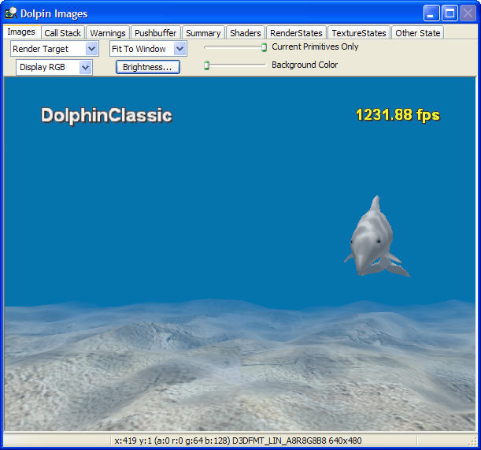

The Images window displays the different surfaces used by the title. Moving through the timeline in either the Timeline window or the Events window updates the images to reflect the current point in the timeline.

From the drop-down list in the upper left, the user can choose one of the following surfaces to display:
Using the drop-down list below the image type selector, the user can choose between displaying color or alpha. Additionally, by clicking Brightness, the user can modify the gamma ramp.
By clicking Brightness, the user can modify the gamma ramp.
Using the drop-down list below the image type selector, the user can choose between displaying color or alpha. Additionally, by clicking Brightness, the user can modify the gamma ramp.
Using the drop-down list below the image type selector, the user can choose between displaying color or alpha. Additionally, by clicking Brightness, the user can modify the gamma ramp.
Using the drop-down list below the image type selector, the user can choose between displaying color or alpha. Additionally, by clicking Brightness, the user can modify the gamma ramp.
Using the drop-down list below the image type selector, the user can choose between displaying color or alpha. Additionally, by clicking Brightness, the user can modify the gamma ramp.
Note Volume and cubemap textures do not display properly in the Images window.
The drop-down list in the middle allows the user to select how the image is scaled to the window. The user has the following options:
The Images status bar is located below the displayed surfaces. When the mouse is over one of the surfaces, different information gets displayed, depending on the surface. If the surface is a render target, a wireframe, or a texture, the status bar shows the position of the pixel under the cursor, its ARGB color, and the size and format of the surface. If the surface is a depth or stencil buffer, the status bar shows the position of the pixel, a hexadecimal value representing the value of the buffer at that point, and the size and format of the buffer. If the surface is overdraw, or the effective fill rate, then the status bar shows the position of the pixel and either the amount of overdraw (larger number, more overdraw) or the fill rate (larger number, lower fill rate).